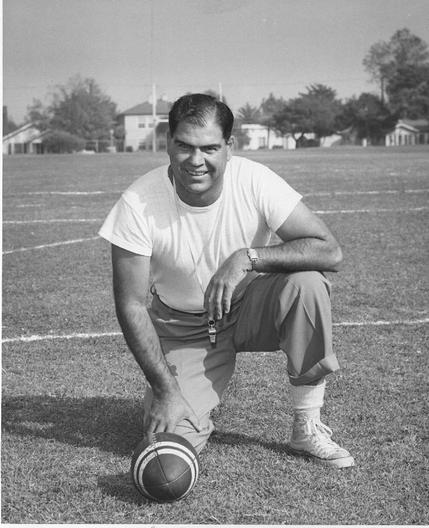

This story is not so much about wine, it's more about life and the lessons we're taught by the people we encounter through it.

I was lucky enough to know a man who in my eyes was the epitome of how to live life; love and smile.
His name was Cliff Graybehl and he was my grandfather. His signature adorns every bottle I make as we also share initials. Cliff grew up in Santa Monica, on the beach, on the pier, in the water. He was a water-man through and through. My cousins and I all have very fond memories of summers with grandpa, learning to body surf, swinging on the rings and playing in the sand in Santa Monica and Muscle Beach. He taught us all to swim, he taught how to play gin, shuffle board, and golf. But more importantly he taught us how to live. He taught us all about kindness, laughter, and unconditional love.

So I make these wines in his honor, even though Cliff was never much of a wine drinker. But as my career path has lead me down the wine trail and not the vodka gimlet route, his drink of choice, I think he would approve. He would approve of anything that brings a little more joy to that special occasion or even just an old regular type occasion.
Now my story and the back ground as to why I love Grenache and make Grenache and Grenache Blanc is a story for another day. Maybe I'll tell it someday, but to me it is of little importance. What's important are the wines, the place and trying to remember all those stupid jokes that my grandfather told. Lucky for me, he only had a few and he told those few often.